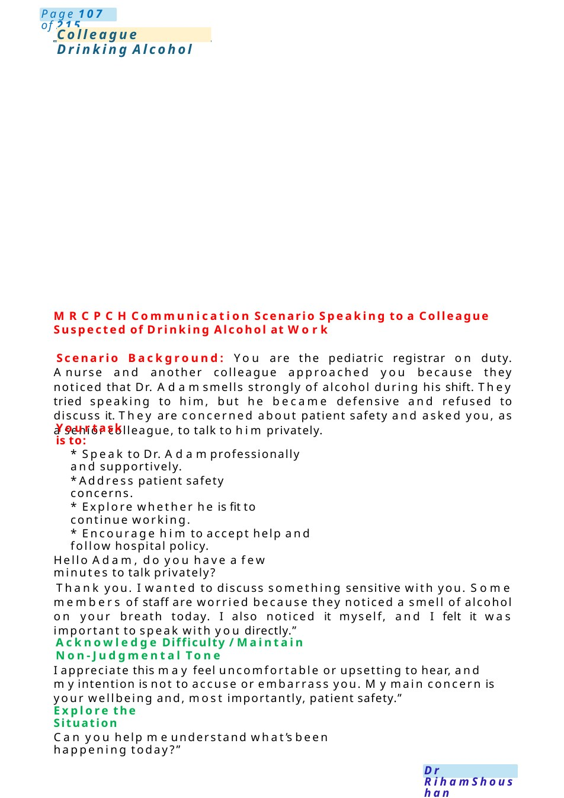
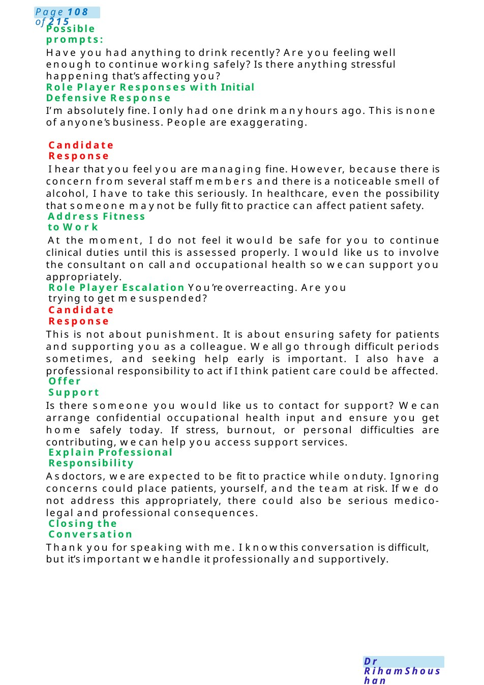
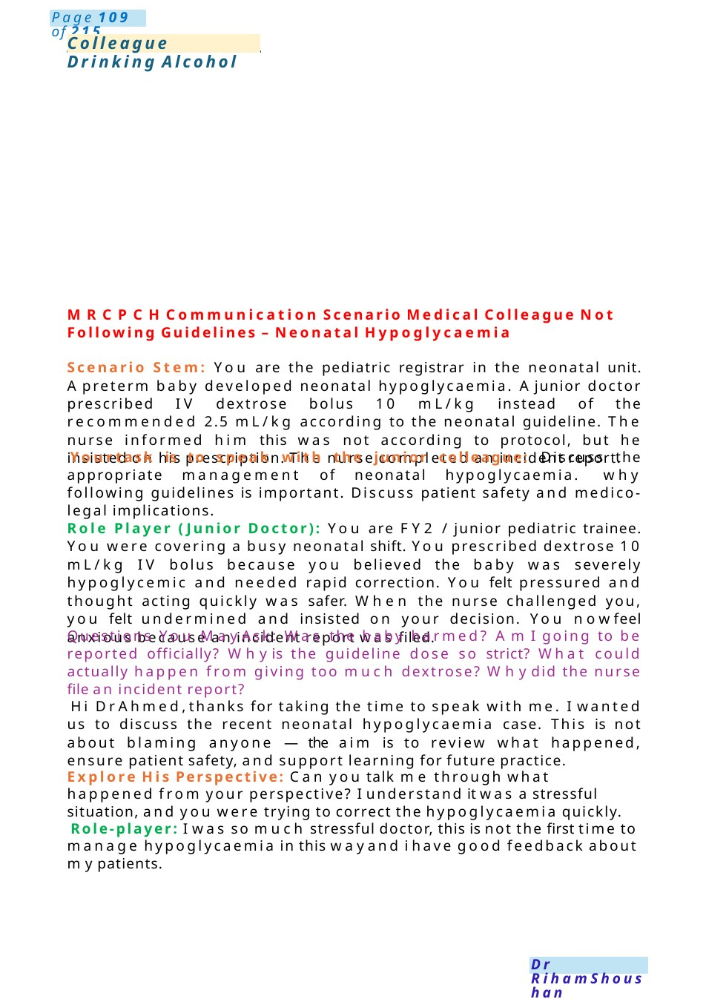

Colleague Drinking Alcohol
MRCPCHCommunication Scenario Speaking to a Colleague Suspected of Drinking Alcohol at Work Scenario Background: You are the pediatric registrar on duty. Anurse and another colleague approached you because they noticed that Dr. Adamsmells strongly of alcohol during his shift. They tried speaking to him, but he became defensive and refused to discuss it. They are concerned about patient safety and asked you, as a senior colleague, to talk to him privately.
Scenario Summary
MRCPCHCommunication Scenario Speaking to a Colleague Suspected of Drinking Alcohol at Work Scenario Background: You are the pediatric registrar on duty. Anurse and another colleague approached you because they noticed that Dr. Adamsmells strongly of alcohol during his shift. They tried speaking to him, but he became defensive and refused to discuss it. They are concerned about patient safety and asked you, as a senior colleague, to talk to him privately.
Full Original Scenario

Colleague Drinking Alcohol
MRCPCHCommunication Scenario Speaking to a Colleague Suspected of Drinking Alcohol at Work
Scenario Background: You are the pediatric registrar on duty. Anurse and another colleague approached you because they noticed that Dr. Adamsmells strongly of alcohol during his shift. They tried speaking to him, but he became defensive and refused to discuss it. They are concerned about patient safety and asked you, as a senior colleague, to talk to him privately.
Yourtask is to:
- Speak to Dr. Adamprofessionally and supportively.
- Address patient safety concerns.
- Explore whether he is fit to continue working.
- Encourage him to accept help and follow hospital policy.
Hello Adam, do you have a few minutes to talk privately?
Thank you. I wanted to discuss something sensitive with you. Some members of staff are worried because they noticed a smell of alcohol on your breath today. I also noticed it myself, and I felt it was important to speak with you directly.”
Acknowledge Difficulty / Maintain Non-Judgmental Tone
I appreciate this may feel uncomfortable or upsetting to hear, and myintention is not to accuse or embarrass you. Mymain concern is your wellbeing and, most importantly, patient safety.”
Explore the Situation
Can you help meunderstand what’s been happening today?”

Possible prompts:
Have you had anything to drink recently? Are you feeling well enough to continue working safely? Is there anything stressful happening that’s affecting you?
Role Player Responses with Initial Defensive Response
I’m absolutely fine. I only had one drink manyhours ago. This is none of anyone’s business. People are exaggerating.
Candidate Response
I hear that you feel you are managing fine. However, because there is concern from several staff members and there is a noticeable smell of alcohol, I have to take this seriously. In healthcare, even the possibility that someone maynot be fully fit to practice can affect patient safety.
Address Fitness to Work
At the moment, I do not feel it would be safe for you to continue clinical duties until this is assessed properly. I would like us to involve the consultant on call and occupational health so wecan support you appropriately.
Role Player Escalation You’re overreacting. Are you trying to get mesuspended?
Candidate Response
This is not about punishment. It is about ensuring safety for patients and supporting you as a colleague. Weall go through difficult periods sometimes, and seeking help early is important. I also have a professional responsibility to act if I think patient care could be affected.
Offer Support
Is there someone you would like us to contact for support? Wecan arrange confidential occupational health input and ensure you get home safely today. If stress, burnout, or personal difficulties are contributing, wecan help you access support services.
Explain Professional Responsibility
Asdoctors, we are expected to be fit to practice while onduty. Ignoring concerns could place patients, yourself, and the team at risk. If we do not address this appropriately, there could also be serious medico-legal and professional consequences.
Closing the Conversation
Thank you for speaking with me. I knowthis conversation is difficult, but it’s important wehandle it professionally and supportively.

Colleague Drinking Alcohol
MRCPCHCommunication Scenario Medical Colleague Not Following Guidelines – Neonatal Hypoglycaemia
Scenario Stem: You are the pediatric registrar in the neonatal unit. Apreterm baby developed neonatal hypoglycaemia. Ajunior doctor prescribed IV dextrose bolus 10 mL/kg instead of the recommended 2.5 mL/kg according to the neonatal guideline. The nurse informed him this was not according to protocol, but he insisted on his prescription. The nurse completed an incident report.
Yourtask is to speak with the junior colleague: Discuss the appropriate management of neonatal hypoglycaemia. why following guidelines is important. Discuss patient safety and medico-legal implications.
Role Player (Junior Doctor): You are FY2 / junior pediatric trainee. You were covering a busy neonatal shift. You prescribed dextrose 10 mL/kg IV bolus because you believed the baby was severely hypoglycemic and needed rapid correction. You felt pressured and thought acting quickly was safer. When the nurse challenged you, you felt undermined and insisted on your decision. You nowfeel anxious because an incident report was filed.
Questions You May Ask: Was the baby harmed? AmI going to be reported officially? Whyis the guideline dose so strict? What could actually happen from giving too much dextrose? Whydid the nurse file an incident report?
Hi Dr Ahmed,thanks for taking the time to speak with me. I wanted us to discuss the recent neonatal hypoglycaemia case. This is not about blaming anyone —the aim is to review what happened, ensure patient safety, and support learning for future practice.
Explore His Perspective: Can you talk me through what happened from your perspective? I understand it was a stressful situation, and you were trying to correct the hypoglycaemia quickly.
Role-player: I was so much stressful doctor, this is not the first time to manage hypoglycaemia in this wayand i have good feedback about mypatients.